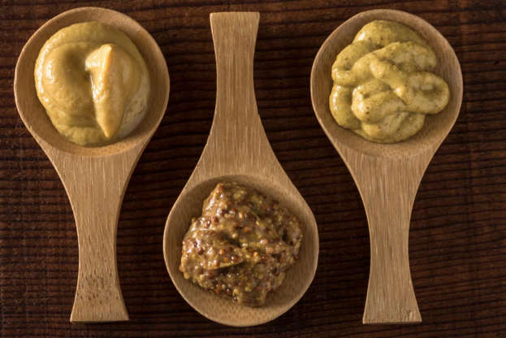

머스타드에 대한 일반적인 설명 머스타드는 향신료다. 머스타드는 요리에 특별한 향과 맛을 추가한다. 따뜻한 음식 및 차가운 음식에 잘 어울리는 머스타드는 고기 및 치즈, 샌드위치, 햄버거 및 핫도그에 잘 사용된다. 또한 드레싱, 소스에 어울린다. 머스타드는머스타드라는 식물의 씨앗으로 만들어진다. 머스타드 꽃은 식용이 가능하지만 약간 맛이 쓰다. 특히 그린 샐러드에 잘 어울린다. 머스타드는 전세계적으로 가장 유명하고 많이 쓰이는 향신료 가운데 하나이다.
물, 식초 및 다른 액체와 머스타드 씨앗을 섞으면 머스타드 소스가 완성된다. 씨앗을 압착하면 두 가지 종류의 머스타드 오일이 완성된다. 씨앗을 압착한 식물성 오일과 씨앗을 갈아서 만든 에센셜 오일이 있다.
머스타드는 캐나다, 미국, 헝가리 및 영국을 포함해 주로 온화한 지역에서 자란다. 또한 인도, 아르헨티나 및 칠레에서 경작이 가능하다. 북아프리카, 중동 및 지중해 유럽에서 머스타드는 야생에서 자란다. 머스타드 씨앗은 고대 일찍부터 향신료로 알려졌는데 기원전 2500-1700년 경에 인더스 문명에서 재배되었다. 사진은 인더스 계곡이다. 로마인들 또 한 머스타드를 좋아했다. 고대의 요리책인 '아키피우스'에는 머스타드를 이용한 레시피들이 소개된 대목에서 확인 할 수 있다. '아키피우스'는 4세기 말에서 5세기 초의 요리를 집대성한 책이다.로마는 갈리아(유럽 서쪽)를 포함해 제국 전체에 머스타드를 수출했다. 그리고 시간에 따라 머스타드의 맛이 유럽에 퍼지기 시작했다.
머스타드 씨앗은 꽤 다양하다. 블랙 머스타드. 브라운 인디안 머스타드 및 화이트/옐로우 머스타드가 있다. 옐로우 머스타드 씨앗이 가장 부드러운 맛을 지니고 있으며 블랙 머스타드 씨앗은 더 맵고 향도 강하다.
프랑스의 머스타드 생산은 10세기 초에 시작되었다. 13세기가 되자 프랑스의 도시 디종은 유럽에서 머스타드로 유명한 도시가 되었다. 오랜 역사 때문에 디종은 머스타드를 대표하는 도시로 여겨진다. 영국 또한 머스타드를 위한 레시피를 개발했다. 리처드 2세의 수석 요리사는 1390년에 요리책 'The Forme of Cury'를 집필했다. 요리책에 수록되어 있는 음식 가운데 하나인 머스타드볼은 밀가루와 계피에 간 머스타드 씨앗을 섞은 후 동글게 말아 건조한 것이다. 영국 글로스터셔에 있는 튜크스베리 마을은 곧 머스타드볼의 고장이 되었다. 이들은 머스타드볼에 순무를 섞어 런던으로 보냈다. 셰익스피어는 자신의 연극인 '헨리 4세, 2부'에서 머스타드볼을 언급했다.1877년, 가장 유명한 디종 머스타드 브랜드 가운데 하나인 그레이 푸퐁(Grey Poupon)이 태어났다. 갈리아 지방의 와인 애호가들이 머스타드 제조가들로부터 착취를 당했는데, 머스타드 소스에 화이트 와인이 재료로 들어갔기 때문이다. 1904년, 로버트 티모시 프렌치가 머스타드 회사인 'French's'를 세웠다. 그러나 사실 크리미한 노란색 머스타드를 개발한 것은 형제인 조지 프렌치였다. 1922년, 이 회사는 프렌치스의 크림 샐러드 머스타드를 소개했다가장 유명한 잉글리시 머스타드 브랜드는 콜먼스(Colman's)이다. 이 회사는 1814년에 다양한 머스타드를 소개했다. 콜먼스는 가장 오래된 식료품 브랜드 가운데 하나이다.
핫도그에 머스타드를 뿌리는 것은 1904년 루이지애나 세계 박람회에서 시작되었다. 축제에 참가한 사람들은 입에 흐르는 머스타드 소스를 닦으며 핫도그를 즐겼다. 미국, 루이지애나 사람들은 자신들만의 크레올 머스타드를 만들었다. 거칠게 간 머스타드 씨앗 때문에 이 소스는 갈색과 노란색이 섞여 있다. 미국에서 흔히 사용되는 머스타드는 "옐로우 머스타드"라고 불리는 아메리칸 머스타드다. 매우 마일드한 이 머스타드의 노란색은 사실 강황이며 주로 핫도그 소스로 사용된다.